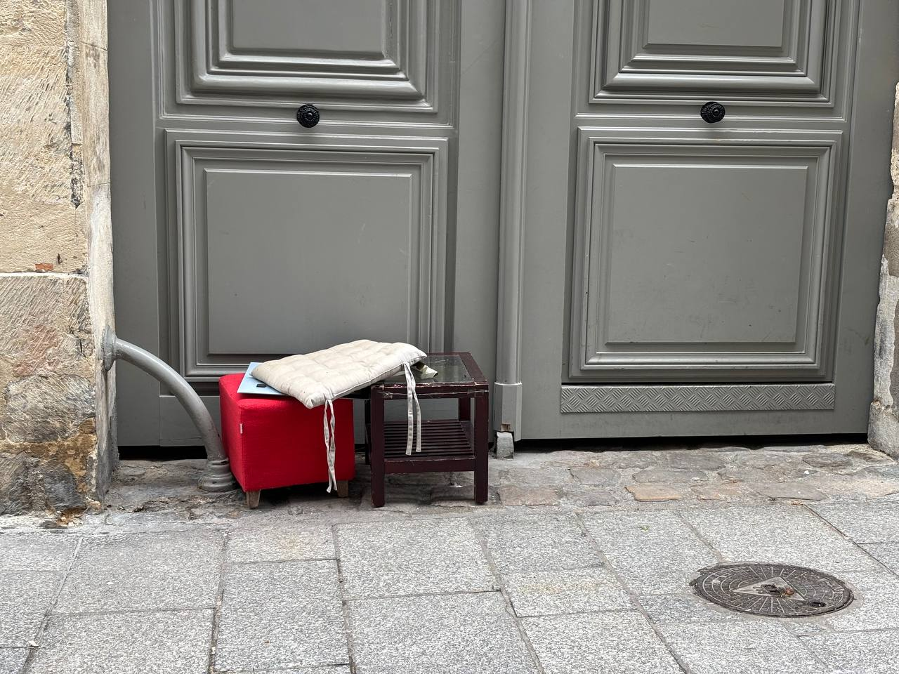

dictionary of the street · Paris, 2022 —
garbage n., uncountable
/ˈɡɑːr.bɪdʒ/ · fr. ordures, déchets, poubelle
- 1. Waste material; things that are thrown away.
the private made public,
the interior made exterior
Garbage of Paris is a visual sociology of waste, traces and urban life. Bags, bins, stains, objects, signs — photographed where they were left.
Snezhana

§ 01 — usage
about the project phr.
My name is Snezhana. Or Jane. As you want. I am a sociologist who makes photographs of garbage.
And so this is Garbage of Paris. Bags, bins, stains, objects, signs. The private made public. The interior made exterior.
Interpretations are left to the viewer.
“Trash is the ideal object of contemplation.”
§ 02 — latest
see all of them →